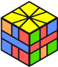
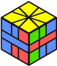

Square-1 : méthode de résolution avancée
Quatrième étape : Placement des coins
En l'état, vous devez avoir un puzzle sous forme cubique (sans compter la tranche du milieu), sur chacune des deux faces vous devez avoir un square-1 dans un état similaire à ça :

Comme le nombre de cas pour achever le tout est encore très grand, nous allons résoudre les coins. Pour ceux qui connaissent la méthode Guimond ou Ortega en 2x2, ils ne seront pas dépaysés. En effet, les séquences présentes dans cette pages sont aussi applicable pour la dernière partie d'une résolution de 2x2. Seulement, la différence réside dans le fait que le mouvement F2 est interdit, tout comme R. Voyons la liste complète :
Les séquences
Toutes ces séquences appliquent des PLL J ou des PLL N sur chacune des faces. Vous remarquerez la simplicité des cas qui ne sont composés que de (3,0) et similaires.
- Les cas qui n'appliquent des changements que sur une face
| | | /(3,0)/(-3,0)/(-3,3)/(-3,0)/(3,0)/ |
|
| | | /(3,3)/(-3,0)/(3,3)/(-3,0)/(3,3)/ |
|
| | | /(0,-3)/(0,3)/(-3,3)/(0,3)/(0,-3)/ |
|
| | | /(3,3)/(0,-3)/(3,3)/(0,-3)/(3,3)/ |
|
- Les cas qui s'appliquent sur les deux faces (eux très similaires à Ortega)
|
|
| | | /(-3,0)/(3,0)/(-3,0)/(3,0)/ |
|
| | | /(0,-3)/(0,3)/(0,-3)/(0,3)/ |
|
|
Expert : Forcer le skip
Encore une fois, on peut forcer le destin pour la prochaine étape. Comme précisé précédemment, ces séquences ne produisent que des PLL N ou J ou conservation totale. Dans les premiers cas, un étage sera conservé donc on peut déjà avoir repérer quelques informations, comme le nombre d'arêtes positionnés ou s'il y a parité, voire la forme complète si on y arrive.
Mais on peut aussi agir sur les comportements des séquences présentes ici. Supposons que l'on tombe sur ce cube :

On a effectivement deux J pures. Le problème étant que si l'on attaque directement avec la formule présenté, on va se retrouver avec un PLL U en haut (application de J au lieu de Jsym et inversement). Pour remédier à ça, on peut faire (1,0), la séquence, et (-1,0). Le premier mouvement va permettre au bloc coin-arête de ne pas se faire couper. On aura donc résolu le cube en un seul coup !
Une règle majeure restera donc d'essayer ne pas couper les blocs coins-arêtes par de petits ajustements tels que (1,0), (0,-1) ou (1,-1)
Si vous savez utiliser correctement Fridrich sur un 3x3, vous pouvez aussi repérer les PLL qui sont formés. Si la PLL existe, alors il n'y aura pas parité sur cet étage. Notez que si les deux étages ont une parité, elles se compenseront.
Expert : Corriger la parité
Comme on l'a vu dans la section précédente. Il est possible d'anticiper sur le fait qu'il y ai parité ou non. Si effectivement, il y a parité sur un seul des deux étages, alors il est possible d'appliquer une séquence qui corrige la parité en permuttant les coins. La liste des séquences est disponible ci-dessous.
Évidemment, cela a une contrepartie comparé à la méthode classique. Il devient impossible de contrôler le skip pour la suite, ou le nombre d'arêtes à placer. Par contre, le nombre de cas est plus restreint pour la suite et bien plus rapide en général. Le choix de la méthode à utiliser vous appartient.
| | | /(3,3)/(5,0)/(2,4)/(0,4)/(0,4)/(4,-2)/(0,-5)/(3,3)/ |
|
| | | /(3,3)/(1,2)/(4,-2)/(-4,2)/(-1,-2)/(-3,-3)/ |
|
| | | /(-3,-3)/(0,-5)/(-4,-2)/(-4,0)/(-4,0)/(2,-4)/(5,0)/(-3,-3)/ |
|
| | | /(3,3)/(1,2)/(2,-4)/(-2,4)/(-1,-2)/(-3,-3)/ |
|
| | | /(-3,0)/(-3,0)/(-5,0)/(-2,0)/(4,0)/(-4,0)/(-2,0)/(5,0)/(-3,0)/ |
|
| | | /(-3,-3)/(0,-5)/(-4,-2)/(-4,0)/(-4,0)/(2,-4)/(-1,0)/(-3,-3)/ |
|
| | | /(3,3)/(5,0)/(2,4)/(0,4)/(0,4)/(4,-2)/(0,1)/(3,3)/ |
|
| | | /(3,3)/(1,0)/(4,-2)/(2,-4)/(0,-4)/(3,3)/(3,0)/(3,3)/ |
|